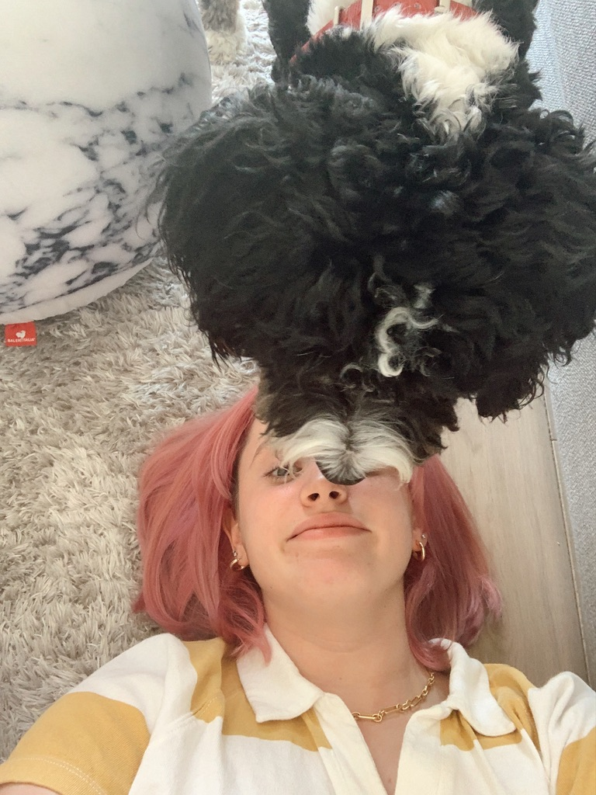
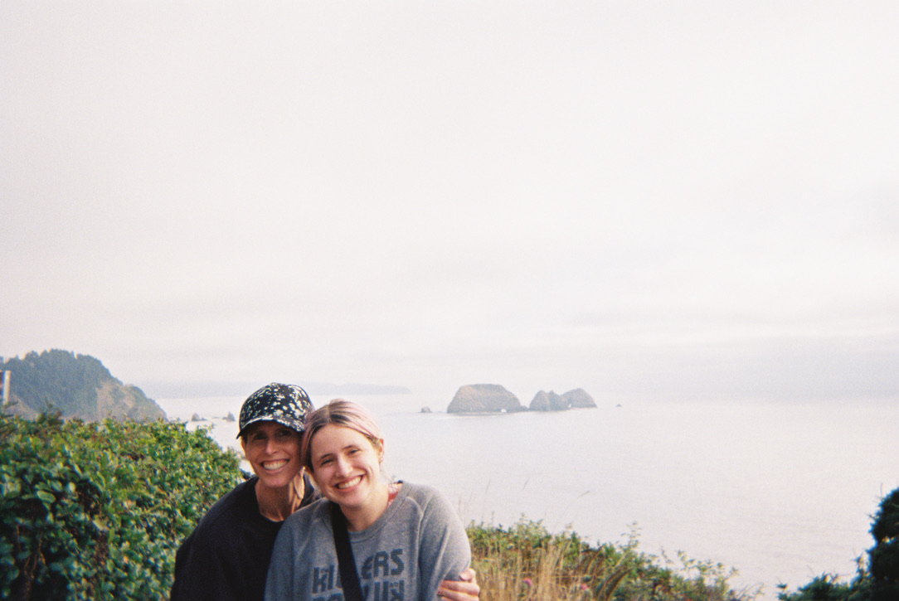
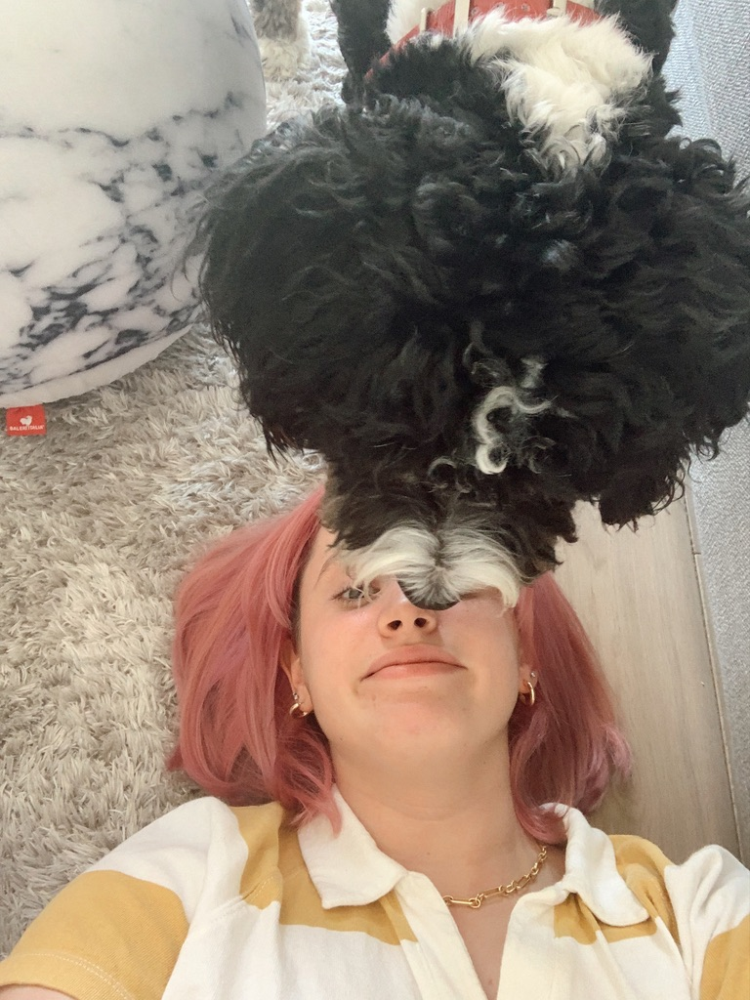
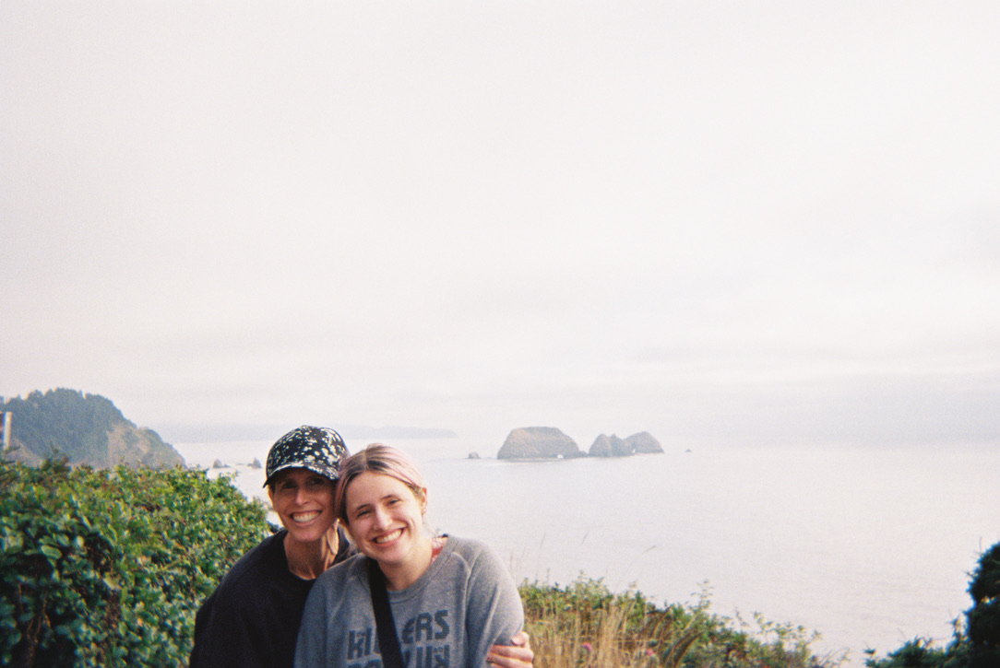

I grew up in Nevada hiking through the desert admiring interesting rocks, Joshua trees, and the red, purple, and black mountains. Having been born into one of the driest climates in the United States, I grew up with an understanding of the importance of conservation, fascinated by all the beautiful desert life that lived and thrived with infrequent precipitation.
I love spending time outdoors, and I hope to make that part of my career one day, and I hope to be involved in conservation work and policy.
I am studying Environmental Science and Sustainability at BYU, and I am minoring in Business. I help lead the Provo chapter of Grow the Flow. I am passionate about conservation, sustainable agriculture, and environmental policy. I will be graduating in April, and will continue on to get my Master's degree in Energy and Earth Resources at UT Austin.